Wir, begrüßen Sie recht herzlich auf unserer Home und wünschen Ihnen viel
Vergnügen beim Betrachten der folgenden Seiten.
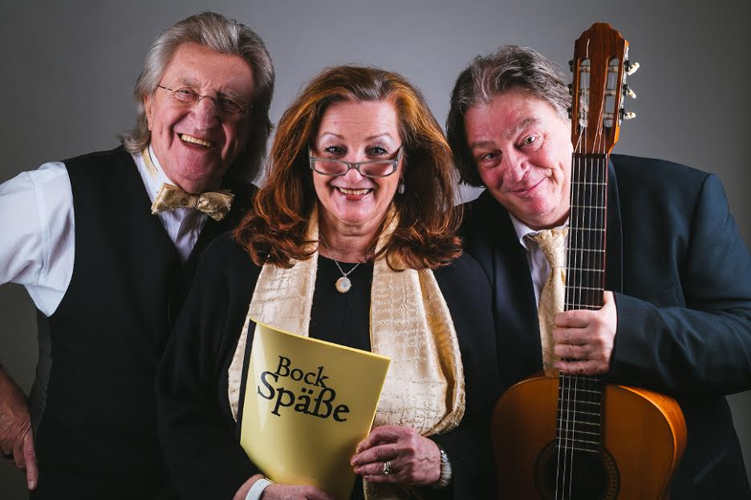
Mit einer angenehmen Portion Humor präsentieren wir Ihnen Dinge des Lebens, in Reimen.
Lohnend und reizvoll zugleich ist es, sich diese schrägen Gedanken durch die Ohren gehen
zu lassen. Marion, Michael und ich, das sind wir drei, die gut gestimmt und
unterhaltend mit den Frohsinngedichten „Bock Späße“ unterwegs sind. Es sind Verse, die
über das Menschsein schmunzeln lassen, manchmal auch die Seele streicheln und somit
die Vielseitigkeit des Menschen berühren.
Wir freuen uns sehr, wenn unsere unterhaltsame Lesung in Ihrer Einrichtung zur
Programmerweiterung beitragen kann und so meine Gedichte bei Ihnen einen willkommenen
Landeplatz finden.
Besonders widmen wir uns auch gern älteren Menschen und tragen ihnen diese heiteren,
manchmal besinnlichen Verse vor.
An pflegebedürftige Personen, sowie an Reha-Patienten denken wir dabei ebenso und
freuen uns schon auf Sie als unsere Zuhörer.
Meine Frau Marion und ich tragen die Frohsinngedichte im Wechsel vor, die auf der Gitarre
von Michael musikalisch begleitet oder zueinander übergeleitet werden. Und das alles von
uns gibt es auch als Hörbuch.
"Ich habe zwei Stück Augenlider,
die schlag’ ich auf und schlag’ ich nieder.
Wie ich das Niederschlagen hasse,
aus Angst, dass ich vom Leben was verpasse.“
Aktuelles
-
Geschichte 16:
So, nun musste "nur" noch das Digipack und das Booklet gestaltet werden.
Ob unseres Bewußtseins, dass wir Vier ein wirkliches Kleeblatt sind und sich Jeder mit seinen Fähigkeiten und Ideen einbringt,
kam Bocki irgendwann auf die Idee uns Vier in ein wirkliches Kleeblatt zu positionieren. Und unser lieber Harald Kretzschmar hat es umgesetzt. Er karikierte uns und so wurde dieses Kleeblatt das Deckblatt für unser Booklet. Ja und der Name sowie das Logo für das Digipack stammen natürlich auch aus seinem Kopf und seiner Hand.
Schlußendlich hat Manuel Schmid die Gesamtgestaltung übernommen und alles Vorhandene an seinen rechten Platz gezwitscht. So z. B. machen einige der Gedichte mit den dazugehörigen Illustrationen im Booklet auf das Gesamtwerk Appetit, Ihr dürft gespannt sein.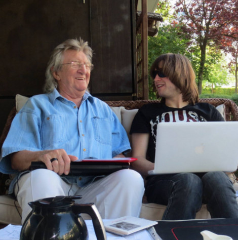 -
Geschichte 15:
Nach einer Vorabnahme in Leipzig, - "gedichterich" - sozusagen, fand dann am 03.06.2015 die "Endabnahme" durch uns alle statt. Wir Vier sassen genüsslich zusammen und hörten uns gemeinsam "die Früchte unserer Arbeit" an - ein Gefühl, sag ich Euch. Da kam erneut das Bild eines Kleebattes in uns auf, was bald umgesetzt sein würde. Na von wem wohl? Von Harald Kretzschmar natürlich. Aber darüber schreibe ich das nächste Mal.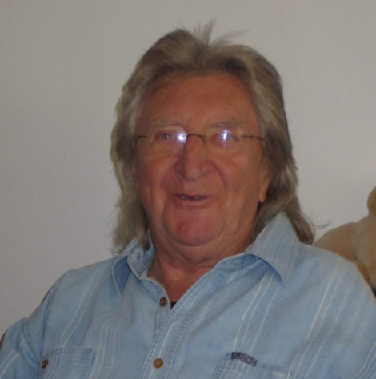 -
Geschichte 14:
Wir trafen uns und Micha legte seine Musikvorschläge als "Zwischenmusiken" vor - gedacht war, dass die jeweilige Musik zum nächsten Gedicht hinführt. Und das ist ihm gelungen. Es hat einfach Spaß gemacht, seinen Vorschlägen zu folgen. Da wir, d. h. ich - Marion - vor einigen Jahr (zehnt) en mit ihm gemeinsam musiziert hatte, kam er auf die Idee, doch wieder einige Stücke gemeinsam zu gestalten. Eine Freude für mich, denn musizieren war schon immer mein Plesier. Dazu passen unser beider Stimmen gut zusammen, wie ich finde. Zwischenzeitlich hatten wir mit Manuel gesprochen und ihm unsere Planung nahe gebracht, er war ebenfalls darüber begeistert - hier trafen sich unsere Vorstellungen - so kamen wir - alle Vier zeitnah zusammen und an drei Tagen wurden alle Stücke eingespielt und eingesungen. Ihr könnt Euch nicht vorstellen, wieviel Laune es gemacht hat, der Kreativität freien Lauf zu lassen - und da waren Manuel und Micha ein unschlagbarens Team.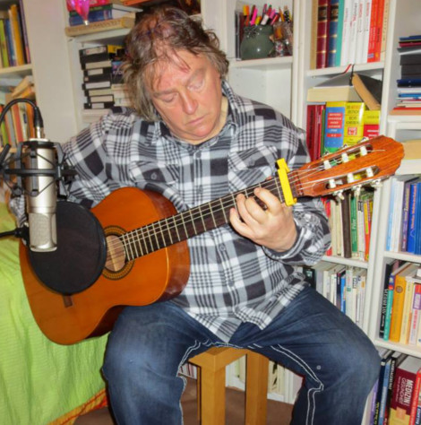 -
Geschichte 13:
In dieser Zeit ging uns parallel durch den Kopf, wie reizvoll es wäre, wenn sich für unser Hörbuch mehrere Künste begegnen würden. Neben Verseschmied und Illustrator noch einen Musikussi zu haben, das wäre doch toll. Da stand natürlich die Frage, wer dieser Jemand sein könnte. Ich brauchte da überhaupt nicht lange nachdenken. Micha, mein langjähriger Musikerfreund, da war ich mir 100 %ig sicher, wäre der Richtige. Nun müßten wir ihn "nur" noch für dieses Projekt begeistern; also trafen wir uns mit ihm, stellten ihm einige Gedichte vor und als sein Lachen erschallte, war es vollbracht. Bald folgten die ersten Arbeitstreffen.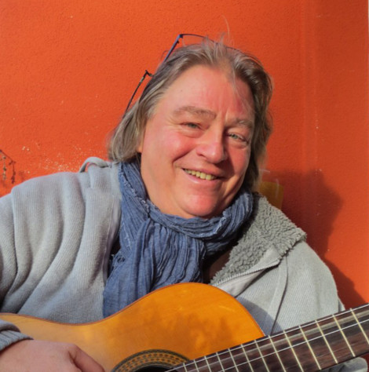 -
Geschichte 12:
Bald kamen wir zusammen, zwei Tage konzentrierte Studioarbeit und wir hatten insgesamt 60 Gedichte eingesprochen. Ich darf Euch verraten: Es hat sooo einen Spaß gemacht. Mit Manuel konnte es auch nur Spaß machen; er ist ein fleißiger und konzentrierter Arbeiter, dabei akribisch und mit einem solchen Feeling für die Sache, die er gerade macht und für die Menschen mit denen er arbeitet, zudem so was von schnell auf seinen "Bedienelementen" (hehe) zu Gange, es war eine Wonne ihm über die Schulter zu schaun und mit ihm zu arbeiten. An dieser Stelle nochmals einen herzlichsten Dank für die wunderbare Zusammenarbeit, lieber Manuel.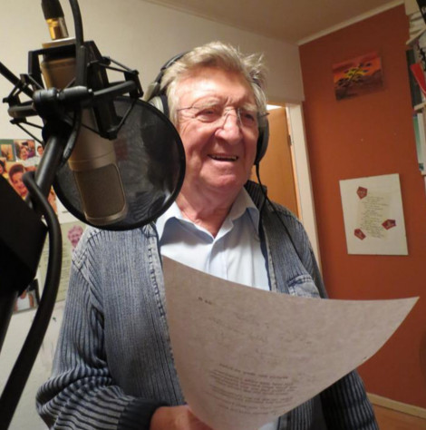 -
Geschichte 11:
Im Gespräch und der Freude darüber, was wir für einen Plan in Angriff genommen hätten sagte uns Martin, dass er den guten Tipp gibt, uns "mit Manuel Schmid", Sänger und Keyborder der Stern-Combo-Meißen, in Verbindung zu setzen, "er hat Erfahrung auf dem Gebiet der Produktion von Hörbüchern - das ist der richtige Mann, bei ihm seid ihr in guten Händen." Wir waren Martin sehr dankbar - Ja, dann galt es sich in Verbindung zu setzen, Termine abzustimmen und schneller als wir es zu träumen gewagt hatten, ging es los. Manuel schrieb in seine List auf seiner Home: " 8.10.2014 - die Produktion zum Hörbuch 'Frohsingedichte' von Be. Bo. hat begonnen." Was für eine Ansage. - - -
Geschichte 10:
Und wir kamen auf die Idee Norbert Jäger von Stern-Combo-Meißen zu fragen; Percussionist, Sänger, Texter, Urgestein - unsere persönliche Verbindung zur Combo, Freund geworden über die vielen Jahre des Kennens. Wir waren überzeugt, dass er einen Rat hat. Und er gab uns den Tipp: "Ruft doch mal den Martin an", gemeint war Martin Schreier, der Bandchef der Stern-Combo, "er kann Euch bestimmt weiter helfen". Gesagt - getan.
Geschichte 9:
Ihr seid drauf gekommen: Ein Hörbuch könnte die Lösung sein. Wir fanden die Idee sehr gut - und fingen an zu überlegen, wie wir dieses tolle Projekt realiesieren könnten. Wenngleich Bernhard ein Fachmann auf der Strecke des Faches Filmproduktion ist, ein Hörbuch hatte er noch nicht produziert. Ergo: Die Konsultation bei Fachleuten war unerläßlich. Wer könnte das sein? Wir überlegten . . .
Geschichte 8:
Ja, er hat. Herr Kretzschmar las einige der ihm von uns geschickten Gedichte, fand offenbar Gefallen an ihnen und erklärte sich bereit, eine Anzahl zu karikieren. Wir haben uns sehr gefreut, das könnt Ihr Euch ja sicher vorstellen. Als wir nun in die Feinplaung gingen und Verlage konsultierten, wurde uns immer deutlicher, wie schwierig es sein würde, dieses Gedichtbändchen zu veröffentlichen. Ich sage nur: Preise, Preise, Preise. Wir kamen ins Überlegen, wie die Gedichte doch noch an den Mann oder die Frau gebracht werden könnten. Habt Ihr 'ne Idee? Na dann, bis demnächst.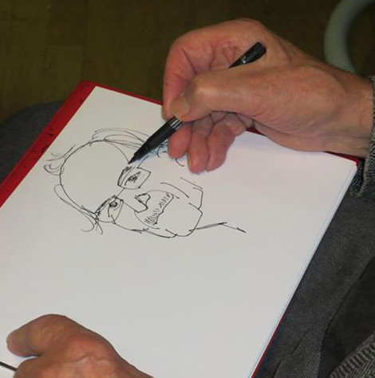Geschichte Nr. 7:
Ursprünglich war da die Vorstellung, die Gedichte in einem Buch zu veröffentlichen. Und bei der Planung kamen wir auf die Idee, vielleicht die Gedichte illustrieren zu lassen. Da stand die Frage, wer könnte das? Da fiel dem Bernhard sofort ein ganz Großer seiner Zunft ein: Harald Kretzschmar. Er hatte ihn einmal beim Dreh einer seiner Buchlesungen kennengelernt und einen Beitrag von ihm gemacht. Würde Herr Kretzschmar zustimmen Zeichnungen zu den Gedichten anzufertigen? Das erfahrt Ihr das nächste Mal.Geschichte Nr. 6:
Hallo Ihr Lieben,
da bin ich wieder. In meinem letzten Posting habe ich ja in gewisser Weise schon etwas vorgegriffen in der Hinsicht, dass ich schon verraten habe, was wir machen. Wie es in unserer "Unterschrift" so heißt: Wir begegnen Ihnen und Euch literarisch - musikalisch & heiter - besinnlich mit Bernhard's Gedichten und unserem von Michael konzipierten musikalischen Programm.
Nun werdet Ihr Euch fragen, wie es dazu gekommen ist.Geschichte Nr. 5:
Ach‚ eines noch: Unseren Slogan müsst lhr unbedingt wissen. Vielleicht gefällt er Euch ja. Wir Zwei, der Micha und ich, haben gern Bernis Slogan übernommen und rufen Euch nun zu "Wir haben sechs Stück Augenlider‚ die schlagen wir auf und schlagen sie nieder. Wie wir das Niederschlagen hassen‚ aus Angst dass wir vom Leben was verpassen."Geschichte Nr. 4:
Ja‚ und ich bin die Marion‚ die Dritte im Bunde. Die Co-Pilotin in doppelter Hinsicht. Warum? Na‚ einmal bin ich sie beim Vortragen der Gedichte und das zweite Mal beim Musizieren‚ genauer gesagt: beim Singen. Ich werde Euch auch künftig über uns berichten. Es gibt noch allerhand zu erzählen‚ wie wir z.B. die "Bock-Spaesse" wurden‚ aber das‚ ein anderes Mal.Geschichte Nr. 3:
Der Zweite im Bunde ist Michael. Er ist unser Musik-Chef. Ihm ist es zu verdanken‚ wenn es uns vielleicht in der Phantasie gelingt‚ auf den Tönen‚ die er auf seiner Gitarre spielt oder die er auch singt‚ von Gedicht zu Gedicht zu fliegen oder wenigstens zu gleiten oder vielleicht auch manchmal zu hüpfen? Sinnbildlich meine ich natürlich...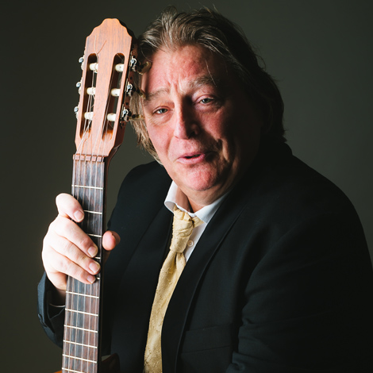Geschichte Nr. 2:
Ihr werdet Euch vielleicht fragen: Wer sind sie? Was machen sie? Nun‚ der Bernhard‚ der "Chef vons Janze" sozusagen‚ hat Gedichte geschrieben. Gedichte‚ die das Leben be - schreibt - und wie er das gemacht hat. . . es lohnt sich anzuhören - eben "heiter - besinnlich" - wie unsere "Unterschrift" schon heißt. Es ist einfach cool‚ sich manch seiner Gedanken durch die Ohren gehen zu lassen und macht vor allem Spaß.Geschichte Nr. 1:
Wir‚ die "Bock-Spaese"‚ machen uns mit Euch bekannt. Wir begrüssen Euch rechtherzlich auf unserer Seite.
Über Uns
Meine Damen und Herren,
ich begrüße Sie.Möglicher Weise begegneten wir uns schon bei der Buchlesung zu „Bock Späße“ persönlich. Insofern kennen Sie meine Frohsinngedichte schon und möchten sie sich noch einmal zuhause anhören, das freut mich. Sie, die Sie noch keine Besucher in unserer Veranstaltung waren, möchte ich erst einmal herzlich begrüßen und mit wenigen Worten auf unser Hörbuch einstimmen.
Es liegt ein Hörbuch vor, aus welchem meine Frau und ich im Wechsel zitieren. Diese Rezitationen werden durch Michael Engelke auf seiner Gitarre musikalisch zueinander übergeleitet. Gemäß dem Titel des Hörbuches sind meine Reime humorige Gedichte, die wir Ihnen vortragen. Unterhaltend, freundlich, manchmal tiefsinnig wurden sie getextet.
Lassen Sie sich überraschen. Lohnend und reizvoll zugleich ist es, sich manch schrägen Gedanken des Lebens so durch die Ohren gehen zu lassen.
Wir Drei sind gut gestimmt und unterhaltend mit den Frohsinngedichten unterwegs, die über das Menschsein scherzen, manchmal aber auch die Seele streicheln.
Die trefflichen Grafiken und Karikaturen zu den Gedichten stammen von Harald Kretzschmar. Er war von den 50er bis zu den 90er Jahren der bekannte Karikaturist der wöchentlich aktuellen Portraits aus dem satirischen „Eulenspiegel“. Bis heute ist er mit seinem feinsinnigen Humor unterwegs und erfreut unsere Herzen.
Sowohl den guten Ton als auch die Produktion dieses Hörbuches haben wir Manuel Schmid zu verdanken. Er ist Audio-Engineer sowie Sänger und Keyborder der bekannten ostdeutschen Artrocklegende "Stern-Combo-Meißen".
Wir alle von den „Bock Späßen“ würden uns sehr freuen, wenn unsere Darbietung bei Ihnen einen willkommenen Landeplatz findet.
Ihr Bernhard Bock.
Bernhard Bock

Bernhard Bock, geb. 25.09.1936 in Berlin, Ist der inhaltliche Finder der vorliegenden Frohsinngedichte, der Verseschmied der „Bock Späße“.
Aus seinem Lebenslauf:
- Studium an der Deutschen Hochschule für Filmkunst im Fach „Filmproduktion“ in Potsdam-Babelsberg
- Produktionsleiter beim DEFA-Studio für populärwissenschaftliche Filme in Potsdam-Babelsberg
- Produktions-Chef beim Deutschen Fernsehfunk
- Freiberuflicher Dramaturg
- Videojournalist bei einem TV-Privatsender, im Rentenalter
- Büroleiter an der Humboldt-Universität zu Berlin
- Im Rentenalter: Video-Journalist, mit Traumberuf
- und mit 76 Jahren absichtlich arbeitslos genommen
- dann mein Leben, auf 387 Computerseiten beschrieben
- Und jetzt: „Bock Späße“ auf einem Hörbuch und nun gern bald mit einer Lesung daraus bei Ihnen.
Marion Bock
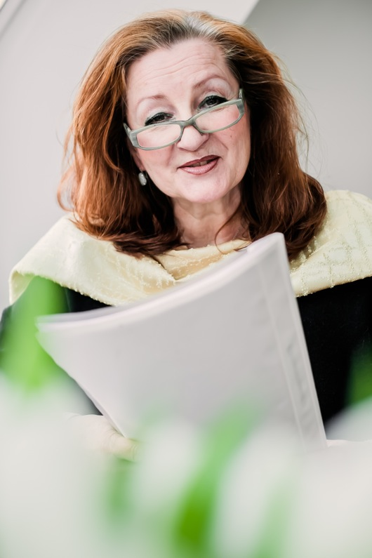ist die "Co-Pilotin" bei den Lesungen der "Bock-Späße" und war die Lektorin dieser Frohsinngedichte
Aus ihrem Lebenslauf:
- Studium der Staats- und Rechtswissenschaften
- Verschiedene leitende Funktionen in der Sozial- und Wohnungswirtschaft
- Ausbildung zur Heilpraktikerin für Psychotherapie
- Assistenz im Schwerstbehindertenbereich / ambulante Dienste
- Stetig für und mit der Kultur engagiert, gesungen und moderiert
- Über Jahrzehnte hatte sie die ehrenamtliche Leitung und Organisation von Veranstaltungen für den Verein „Indische Solidaritätsaktion e.V.“.
Michael Engelke

ist Musiker mit Leib und Seele
Aus seinem Lebenslauf:
- Erste Kontakte zur Musik in der Gruppe „Morgenstern“
- Gesangsstudium an der Hochschule für Musik „Hans Eisler“, Berlin
- Solodiplom an der Hochschule „C.M. von Weber in Dresden
- Dirigierunterricht bei Prof. Horst Müller
Seit Anbeginn ist Michael Engelke mit eigenem Programmen unterwegs. Er ist Orchesterleiter und Dirigent des gemischten Kammerchores „coro con brio“, auch vom Frauenchor „Intermezzo Vokale“. Darüber hinaus arbeitet er seit vielen Jahren als Gesangspädagoge.
Manuel Schmid
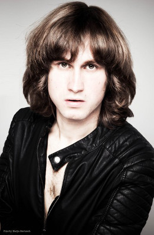Seine Leidenschaft zur Musik entdeckte Manuel Schmidt schon im Alter von 7 Jahren. Als Sänger und Keyboarder ist er seit dem Jahre 2000 in Sachen Musik unterwegs.
Aus seinem Lebenslauf:
- Klavier und Gesangsunterricht an den Musikschulen Altenburg und Borna
- Tontechnik-Studium am SAE-Institut Leipzig mit Abschluss
- seit 2008 Pianist beim Altenburger Gospelchor „Colours of Soul“
- seit 2010 Sänger und Pianist im kammermusikalischen Experimentalensemble „eccolo“
- Seit 2012 Sänger und Keyboarder der ostdeutschen Artrocklegende „Stern-Combo-Meißen“
- Manuel Schmid wirkt neben seinem Engagement als Solokünstler in verschiedenen musikalischen Projekten als Musiker, Produzent und Tontechniker mit.
Harald Kretzschmar
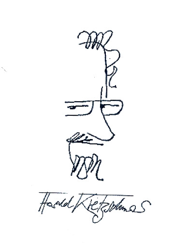ist der bekannte Karikaturist, Grafiker und Feuilletonist des satirischen „Eulenspiegel“, als „der freche Zeichenstift des Eulenspiegels“ charakterisiert und ist „ein ganz Großer seiner Zunft“
Aus seinem Lebenslauf:
- Harald Kretzschmar, geb am 23. 5. 1931 in Berlin
- Studium von 1950 bis 1955 an der Hochschule für Grafik und Buchkunst in Leipzig
- Von 1955 an gehörte er bis Anfang der 90 er Jahre zum festen Stamm der Zeichner des legendären satirischen "Eulenspiegel" der DDR
- Harald Kretzschmar begleitete uns bei der Entstehung des Hörbuches "Bock Späße" mit seinen Karikaturen zu den erdachten "Darstellern" und Grafiken der Gedichte. Er ist darüber hinaus ein gefragter Schnellportraitist bei Veranstaltungen der verschiedensten Art.
Fotos
Hörbuch
Wenn Jemanden etwas gefällt, dann möchte er es auch oft mit nach Hause nehmen...
Daran ist gedacht worden und das Hörbuch mit dem Titel: „Bock Späße“ ist entstanden.Das kann nach einer Lesung erworben und mitgenommen werden. Zu Hause ist es dem gewesenen Besucher dann möglich, die Hörfreude aus der Veranstaltung noch einmal nachzuvollziehen, ja vielleicht sogar noch zu vertiefen, denn alle vorgetragenen Gedichte finden sich auf der CD wieder,
auch mit Musik - und sogar Effekte haben sich in das Hörbuch „eingeschlichen“ - Sie dürfen gespannt sein.Sowohl den guten Ton und die musikalische Mitgestaltung, als auch die Produktion dieses Hörbuches haben wir Manuel Schmid, Sänger und Keyboarder der „Stern-Combo-Meißen“, ebenfalls Audio-Ingenieur seines Zeichens, zu verdanken. Für das vorliegende Hörbuch hat Michael Engelke das musikalische Konzept entwickelt und gemeinsam mit Manuel Schmid den musikalischen Rahmen geschaffen.
Ein Hörbuch ist in seiner Art etwas Besonderes. Mit diesem Medium erreicht der Autor, wenn er seine Schöpfung selbst vorträgt, vielleicht emotional den Hörer intensiver, als wenn Dieser es selbst liest. Auf einem Hörbuch lässt sich aber ein Foto, ein Bild, nicht wirkend unterbringen, da sie ja bekanntlich nicht zu hören sind. So haben wir uns besonders gefreut, dass die Gestaltung des Digipacks und des Buglets Herr Harald Kretzschmar übernommen hat. Zu ihm kommen wir später.
Kontakt